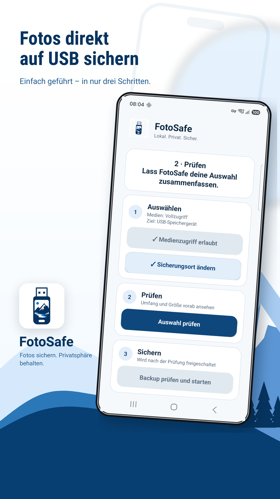
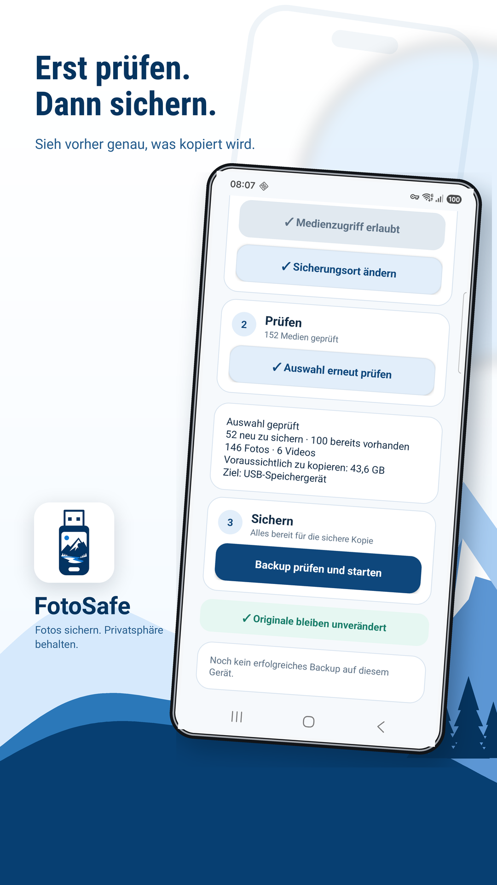
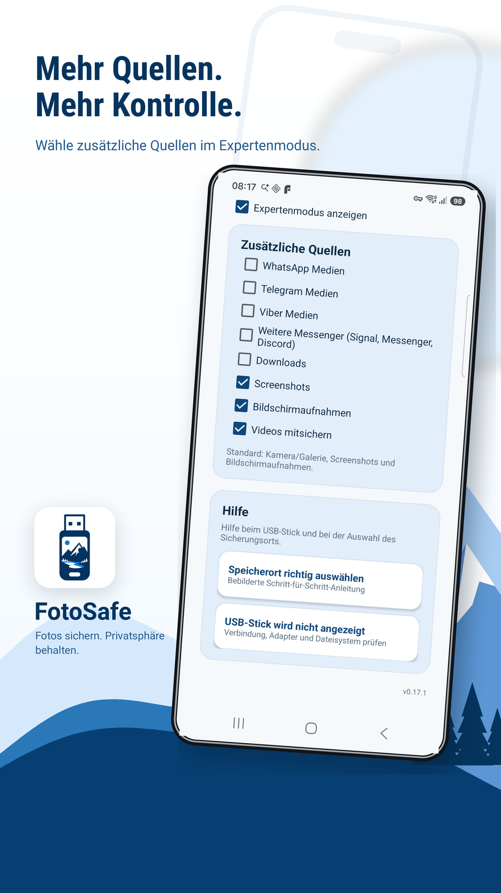

USB
Lokales Backup
Fotos und Videos werden auf ein vom Nutzer gewähltes USB-/Speicherziel kopiert.
FotoSafe führt Schritt für Schritt durch ein lokales Android-Backup auf USB-Stick oder Speicherordner — ohne Medien-Cloud, ohne FotoSafe-Konto und ohne Löschen der Originale. Ein erfolgreicher Lauf bis 100 Medien ist kostenlos; Pro ist ein einmaliger Kauf ohne Abo.
FotoSafe 0.17.2 ist im geschlossenen Google-Play-Test veröffentlicht. Der Produktionszugang wird derzeit von Google geprüft.

Eine einfache Zusatzsicherung für Menschen, die ihre Erinnerungen nicht nur in der Cloud haben wollen.
Fotos und Videos werden auf ein vom Nutzer gewähltes USB-/Speicherziel kopiert.
FotoSafe kopiert nur. Es werden keine Originaldateien vom Handy gelöscht.
Bereits gesicherte Dateien werden übersprungen. Ein zweiter Lauf ist dadurch schneller.
Aufgenommen auf einem Samsung S23: geführter Start, verständliche Vorschau und optionale Zusatzquellen.
Geführter Start mit USB-Speichergerät und dem Hinweis, dass Originale am Handy bleiben.

Vor dem Start zeigt FotoSafe neue und bereits gesicherte Medien sowie die Datenmenge.

Optionale Quellen für Messenger, Downloads, Screenshots und Videos.
Die FotoSafe-App bleibt ohne Foto-/Video-Upload, FotoSafe-Konto, Werbung, Tracking oder Analytics-/Crash-SDKs. Nur diese Website kann nach freiwilliger Zustimmung eine datensparsame Statistik laden. Der optionale Pro-Kauf wird von Google Play abgewickelt.
Privacy Policy, Data Safety, Photo/Video Permission Declaration, Foreground-Service-Declaration und aktuelle DE/EN Store-Assets sind gepflegt.
| App | FotoSafe |
|---|---|
| Paketname | at.weidi.fotobackup |
| Version | 0.17.2 / Version Code 34 |
| Plattform | Android 9+ / Target SDK 36 / Kotlin / native Android |
| Support | Hilfe und Kontakt |
| Tests | 108 JVM-Tests; reale Geräteprüfungen unter anderem auf Samsung S23 und Galaxy A53 mit Android 16 / API 36 |
| Play-Status | 0.17.2 im geschlossenen Test · Produktionszugang in Prüfung |
FotoSafe muss Fotos und Videos lokal lesen können, um sie auf das gewählte Ziel zu kopieren.
Android verlangt externen Speicher über den System-Dateidialog. FotoSafe schreibt danach in /FotoSafe/. Zur bebilderten Anleitung
Nein. Die Sicherung läuft lokal auf dem Gerät und dem gewählten Speicherziel.
Ein erfolgreicher Lauf mit bis zu 100 Medien ist kostenlos. Unbegrenzte Backup-Läufe werden mit dem einmaligen Google-Play-Kauf FotoSafe Pro freigeschaltet. Kein Abo.
Android kann lange Hintergrundvorgänge begrenzen. Bereits kopierte Dateien bleiben erhalten und werden beim nächsten Lauf übersprungen.
Ein Backup kann unvollständig bleiben, wenn Akku, Gerät, Android, Kabel, Adapter oder USB-Stick während der Sicherung ausfallen. Bitte Handy ausreichend laden, USB-Stick nicht abziehen und das Ergebnis prüfen.
FotoSafe ist eine zusätzliche Sicherung. Bitte behalte wichtige Fotos auch an anderer Stelle und lösche Originale erst, wenn du die Kopien am USB-Stick geprüft hast.
FotoSafe wird mit Sorgfalt entwickelt, kann aber keine Garantie geben, dass jedes Backup auf jedem Gerät, Android-System, Kabel, Adapter oder USB-Stick vollständig und fehlerfrei abgeschlossen wird. Die Nutzung erfolgt eigenverantwortlich. Bitte prüfe wichtige Sicherungen am Zielmedium und bewahre mindestens eine weitere Kopie deiner wichtigen Fotos und Videos auf.